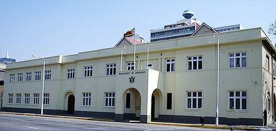
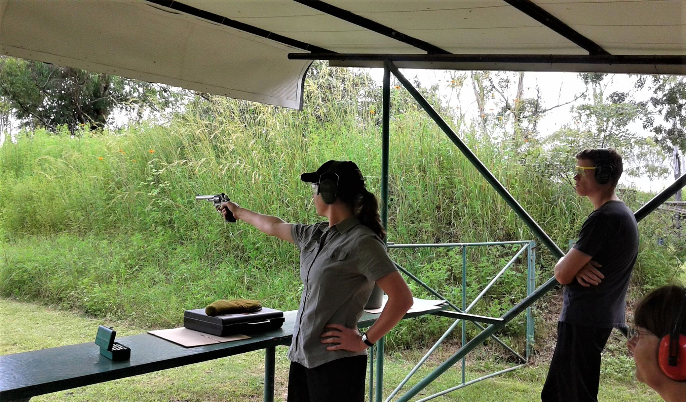

Mkwisi Woodlands
 Mkwisi Woodlands, Harare
Mkwisi Woodlands, Harare
Explore the serene beauty of Harare's Mkwisi Woodlands, perfect for picnics and nature walks.
Cleveland Dam
 Cleveland Dam, Harare
Cleveland Dam, Harare
A scenic reservoir offering tranquil views and recreational activities.
Africa Unity Square
 Nelson Mandela Avenue, Harare
Nelson Mandela Avenue, Harare
A historic park in the heart of Harare, known for its fountains and flower vendors.
Parliament Building

Parliament Building, Harare
An iconic structure symbolizing Zimbabwe's governance and history.
Reserve Bank of Zimbabwe
 Reserve Bank of Zimbabwe, Harare
Reserve Bank of Zimbabwe, Harare
The tallest building in Harare, showcasing modern architecture and economic significance.
Cleveland Rifle Range

Cleveland Rifle Range, Harare
A popular spot for shooting sports enthusiasts and outdoor activities.
Sam Levy Village
 Sam Levy Village, Harare
Sam Levy Village, Harare
A vibrant shopping and entertainment hub in Harare's northern suburbs.
Harare Showgrounds
 Harare Showgrounds, Harare
Harare Showgrounds, Harare
The venue for the annual Harare Agricultural Show and other major events.